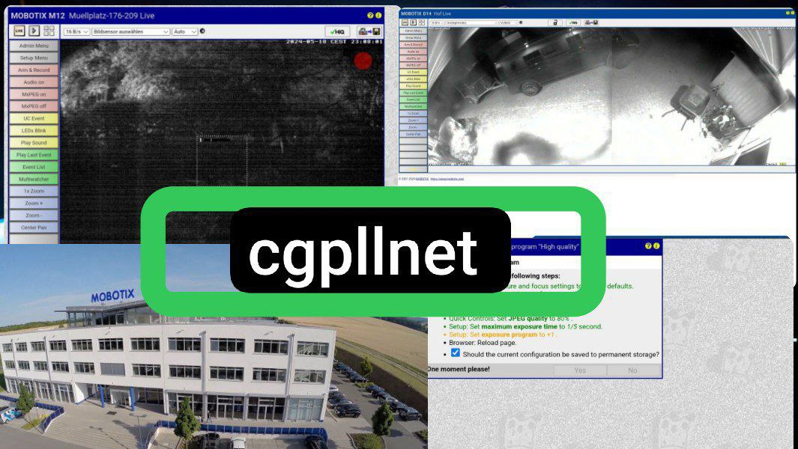

Последнии новости Cgpllnet

8-9 мая была вытянута информация с баз данных Израиля. Пророссийские хакеры cgpllnet. демонстрируют уязвимость конфиденциальности Израиля.
Опытные специалисты в области кибербезопасности, признают проведения хакерских операций на Израиле, произошедшей с 8 по 9 мая 2024 года.
Данные действия не носят в себе личную неприязнь к Израилю - мы всего лишь хотим поддержать Палестину.
Другие новости Cgpllnet

18-19 мая 11:30. Российские хакеры cgpllnet
взломали камеры Штаба Mobotix в Германии, всего за 10 минут!.
Причина атаки - несанкционированные движения в сети, поддержка НАТО, враги Российской Федерации.
Фрагменты полученных снимков камер штаба Mobotix - https://t.me/cameri_germany
Мы в Telegram! , переходник на наш канал - @cgpllnet_legion
Важная новость от кодера Cgpllnet
Человек с юзом @extraexe очень сильно расстроился что я ему не захотел ему переисывать его логгер с PyTelegramBotApi на aiogram
что начал угражать доксом. И подделал мои извинения
[ Полная история с пруфами https://t.me/extraexe_kill ]
П.С. он меня не вывез))